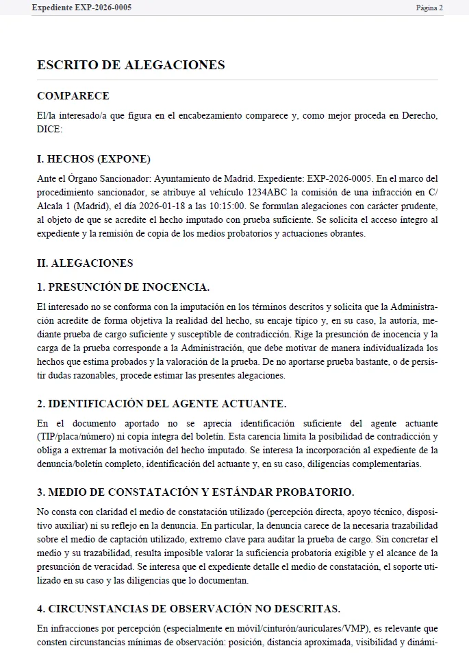

“Me aclaró qué faltaba”
“Subí el PDF y me señaló lo que no aparecía en el expediente. Con eso ya sabes qué pedir y por dónde tirar.”
Particular · Valencia
Sube el PDF y te mostramos qué puntos débiles tiene el expediente, qué falta en la notificación y cómo quedaría la alegación antes de decidir si pagar o recurrir.
Análisis gratis · detecta fallos reales · pago solo si desbloqueas el escrito
Cómo funciona
Transparente y sin humo: primero detectamos debilidades reales del expediente; después, si quieres, generas el escrito. Usamos IA para leer el PDF (y OCR cuando hace falta) y ayudarte a revisar lo importante.
Extraemos texto y aplicamos OCR selectivo cuando hace falta.
Motivación, prueba/expediente, plazos/notificación y coherencias internas.
Redacción ordenada (estilo despacho) basada en lo que consta/no consta.
Revisas y descargas sin marca de agua (pago por escrito o plan ilimitado).
Menos errores de lectura → mejor análisis.
Te decimos qué pedir y qué revisar.
Qué detectamos
No es una “plantilla”. Es un análisis del documento que subes y una redacción que se ajusta a lo que consta.
Defectos de notificación, cómputo de plazos, motivación no individualizada, respuestas genéricas.
Ausencia de anexos clave, trazabilidad dudosa, incoherencias entre denuncia y documentación.
Verificación/calibración, margen de error, señalización, identificación en la prueba.
Señalización, exenciones, matrícula/horario, prueba de acceso.
Señalización y tipificación, fotos/lectura, denuncia incompleta, grúa/retirada y tiempos.
Identificación del conductor, prueba suficiente, coherencia del relato y anexos.
También analizamos: alcoholemia, ITV/seguro, stop, documentación, transporte y más.
Borrador
Basado en lo que consta/no consta en tu PDF. Tú revisas hechos, anexos y matices antes de presentar.
El borrador se construye desde el PDF que aportas y lo que se desprende del expediente.
Si falta documentación (prueba, boletín completo, anexos), te sugerimos qué pedir y cómo.
La preview con marca de agua te obliga a revisar: hechos, fechas, anexos y matices.

Encabezado, hechos, fundamentos y solicitud final, con anexos propuestos.
Si algo no está en el documento, no se inventa: se deja indicado.
De la notificación a un borrador listo para revisar y presentar.
Guías por tipo de multa
Empieza por la guía que mejor encaja con tu multa y termina en el análisis gratuito del PDF.
Dudas o soporte general: contacto@juravia.app
Confianza
Feedback recurrente tras revisar el análisis gratuito, ver la preview y decidir si compensa seguir.
“Subí el PDF y me señaló lo que no aparecía en el expediente. Con eso ya sabes qué pedir y por dónde tirar.”
“La estructura está muy bien. Yo solo cambié 2 cosas y añadí un anexo. La preview con marca de agua ayuda mucho.”
“No te vende humo: te marca lo que se ve y lo que no se ve. Si falta algo, te lo pone como no consta.”
“Yo no había visto un fallo en la notificación (plazo/forma). El informe me lo marcó y entendí qué pedir en el expediente.”
“Tuve 3 multas ese mes y con la suscripción me compensó. Lo uso para tenerlo todo ordenado.”
Comparativa
Tres enfoques habituales. Elige el que encaje con tu caso, tiempo y presupuesto.
Ideal si: quieres rapidez y una base sólida sin encargo completo.
Ideal si: ya sabes qué alegar y solo necesitas un modelo.
Ideal si: el caso es complejo o hay riesgo alto (puntos, alcoholemia…).
Seguridad y privacidad
Tu multa contiene datos personales. Juravia está diseñado para tratarlos con prudencia: procesamos lo necesario y evitamos conservar el documento más allá de lo imprescindible.
Ámbito
Según el documento aportado. La cobertura depende del organismo emisor y de lo que conste en el expediente.
Precios
Para una multa concreta, suele bastar con desbloquear un escrito. Si gestionas varios expedientes, compensa el plan mensual.
Pensado para resolver una multa concreta sin pagar una suscripción.
La opción adecuada para un uso profesional o repetido.
Un informe automatizado con puntos débiles (procedimiento, prueba, plazos/notificación) y una lectura “lo que consta / no consta” para saber qué falta y qué conviene solicitar o adjuntar.
Normalmente son minutos, según el tamaño del PDF y si necesita OCR. Si el documento está escaneado o con imágenes, el procesamiento puede tardar más.
Si el PDF viene escaneado (sin texto seleccionable), aplicamos OCR selectivo para mejorar la extracción. Así reducimos errores y el informe es más fiable.
Sí. Usamos IA para analizar el PDF y señalar posibles puntos débiles en función de lo que consta y lo que no consta. Recomendamos revisar el expediente antes de presentar.
Sí, siempre que subas el documento que te han notificado (DGT, ayuntamiento, etc.). El análisis se ajusta a lo que consta en tu PDF y nuestras guías te orientan sobre el trámite de cada organismo.
Aplicamos OCR cuando hace falta. Si la calidad es baja o faltan páginas, lo indicamos para evitar conclusiones incorrectas.
Por ejemplo: motivación insuficiente, prueba incompleta, anexos que no constan, incoherencias internas, defectos de notificación y cuestiones de plazos. El resultado depende de lo que aporte tu documento.
No. El borrador se apoya en el PDF y en lo que se desprende del expediente. Si falta un dato clave, se marca como no consta y se sugiere qué pedir o adjuntar antes de afirmarlo.
Sí. Tendrás un texto con estructura profesional para revisar y ajustar (hechos, fechas, anexos, matices). Te recomendamos comprobar siempre el contenido antes de presentar.
Suele ser útil solicitar copia íntegra del expediente y pruebas: boletín completo, identificación del agente, fotos/medios probatorios, certificados/calibración (si aplica) y actuaciones. Juravia te sugiere qué pedir según el caso.
Si el expediente está completo y la prueba es sólida, puede no ser rentable. El análisis te ayuda a decidir con prudencia y a priorizar esfuerzos.
No. Juravia no puede garantizar resultados. Sirve para ordenar el caso, detectar carencias y redactar un escrito coherente. El éxito depende del expediente, la prueba y el criterio del órgano competente.
El PDF se procesa para generar el informe y la preview. Aplicamos minimización y retención limitada: el objetivo es conservar lo mínimo imprescindible. Consulta la política de privacidad y, si lo necesitas, solicita borrado.
Desbloquea 1 descarga del escrito final sin marca de agua. El análisis y la preview son gratuitos; pagas solo si decides descargar.
Si prevés descargar varios escritos al mes (por ejemplo, 3 o más), suele salir mejor que pagar por escrito. Está pensada para particulares con varias multas y autónomos.
Depende del organismo (DGT, ayuntamiento, etc.). Consulta nuestras guías y, si falta documentación, pide el expediente antes de afirmar extremos clave.
Especialmente en sanciones con pérdida de puntos, alcoholemia, transporte o posible ámbito penal, y cuando el expediente sea complejo o haya riesgo elevado.
Juravia genera un informe automatizado y un borrador para ayudarte a presentar con orden. No es asesoramiento jurídico personalizado ni garantiza resultados. Consulta el aviso legal.
Dudas o soporte general: contacto@juravia.app